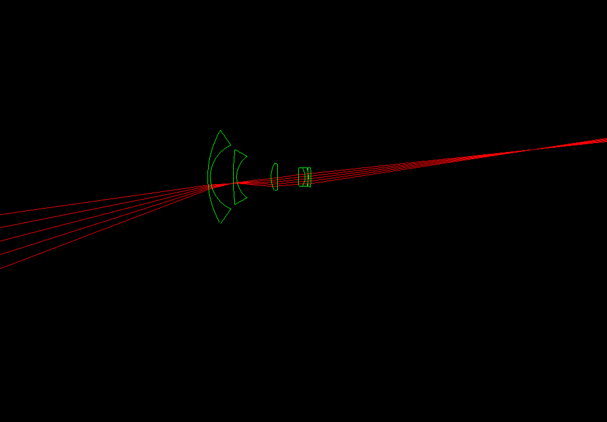
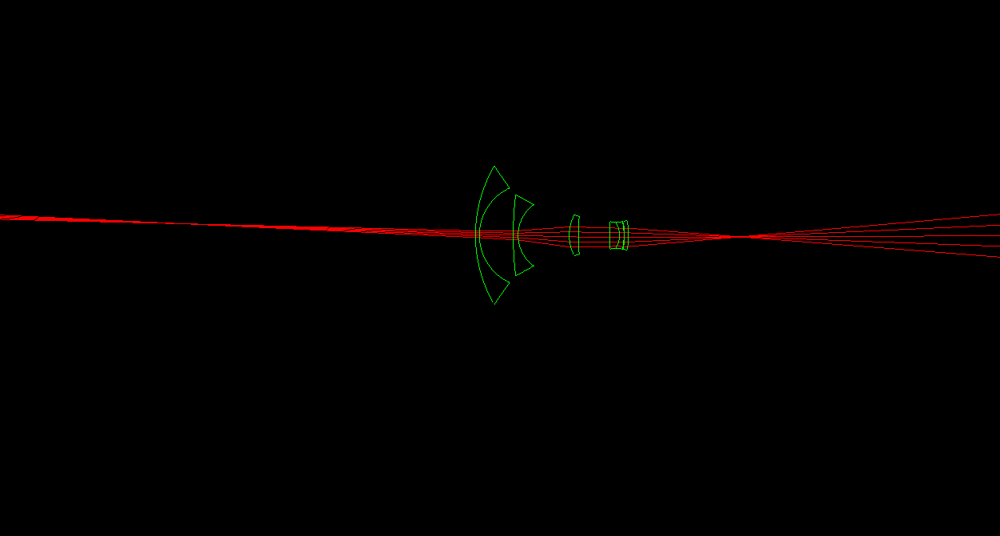
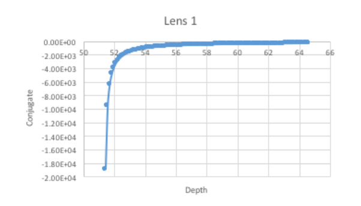
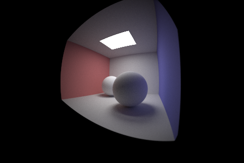
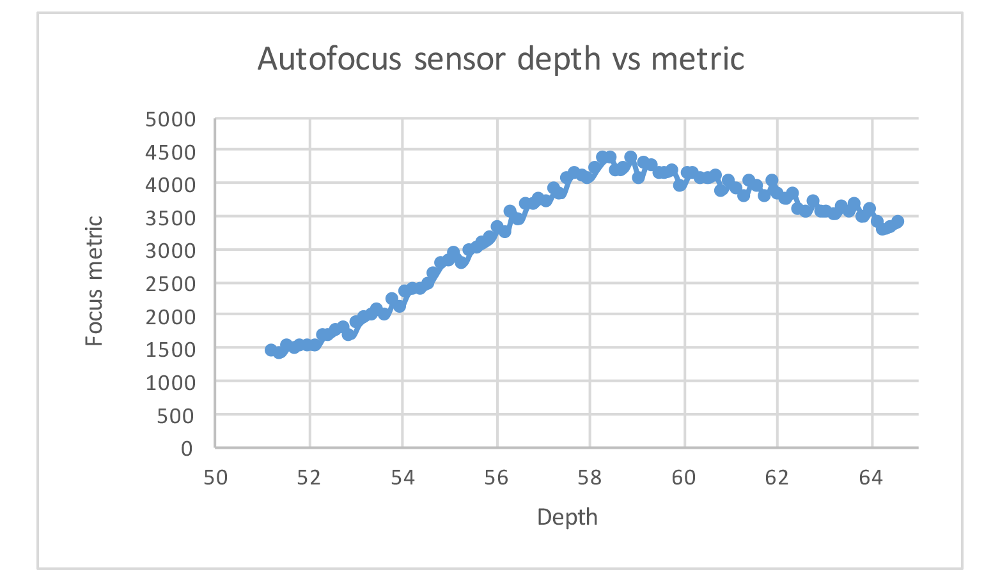
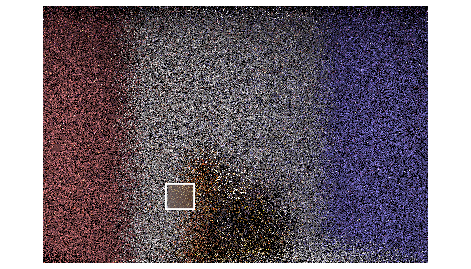
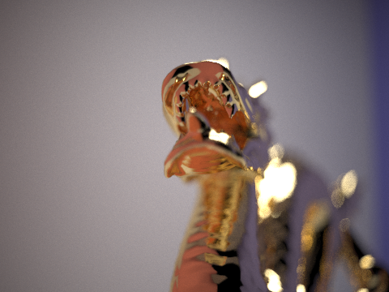
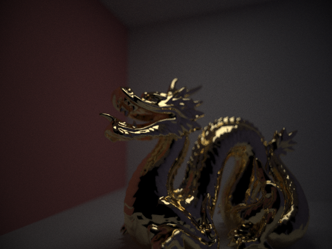
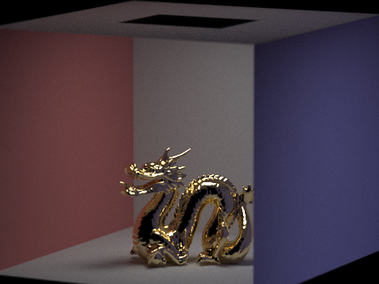
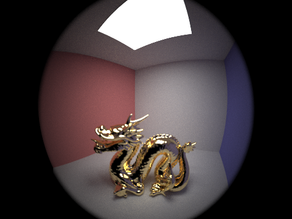

In this project, I added a realistic physically-based camera lens simulator to the pathtracer from the previous project, with the additional ability to autofucus. After this, I could simulate different physical effects on my scenes, such as a fisheye lens.
Part 1: Ray Generation and Intersection
We were given different LensElement objects with the ability to refract our virutal rays according to Snell's law $\frac{sin(\theta_1)}{sin(\theta_2)} = \frac{n_1}{n_2}$, and a combination of several LensElements gave us different Lens objects, which simulates different lenses we can switch between when rendering our scene, much like detachable DSLR lenses.
Pinhole cameras generally have poorer focus and require more light for a smaller aperature and far longer exposure times to get a sharp image without loss of brightness. While a larger aperature would allow more light to pass through, thereby increasing brightness, light overlap from neighboring parts of a scene will result in a blurrier image. Lenses have an advantage over traditional pinhole cameras in that they have the ability to focus light rays and converge them without sacrificing or loss of light. Also, the depth of field of a pinhole camera is essentially infinite, while working with lenses give us more control over the scene.
After adding the ability for LensElements to pass a light ray through (by testing for intersections, and refracting according to Snell's law as in the previous project), we can now visualize the results of passing
light rays through our lenses. Here are the results of tracing multiple light rays through our virutal
double Gaussian lens, wide lens, telephoto lens, and fisheye lens, both forwards and backwards. Note where the rays converge, forming the conjugate point. By far, the most difficult debugging challenges arose from
refraction and Snell's law. My rays kept refracting through the first lens element in the double Gauss lens, but reflecting to where they originated from as soon as they reached the secound boundary. In the end, I debugged this issue by fixing the direction of my normal.
 Double Gaussian Lens Forwards Trace
Double Gaussian Lens Forwards Trace
|
 Double Gaussian Lens Backwards Trace
Double Gaussian Lens Backwards Trace
|
 Wide Lens Forwards Trace
Wide Lens Forwards Trace
|
 Wide Lens Backwards Trace
Wide Lens Backwards Trace
|
 Telephoto Lens Forwards Trace
Telephoto Lens Forwards Trace
|
 Telephoto Lens Backwards Trace
Telephoto Lens Backwards Trace
|
|

Fisheye Lens Forwards Trace
|
|

Fisheye Lens Backwards Trace
|
Even at a glance, these pictures seem to make sense--for instance, examining the telephoto lens, we notice
that it focuses light rays coming from an extremely far away origin point. Next, I calculated focus parameters--the depth of the infinity focus sensor, the focal length of our lens, the close focus sensor depth, and its conjugate in world space. The results are displayed below.
For each of the lenses, there should be an inverse relationship between the sensor depth of a point and it's conjugate in the real world. The plots below, in 100 increments between the infinity focus depth to the close focus depth, demonstrate this is true and confirm that our tracing and focus_depth function work correctly.
|

Double Gaussian graph
|
In the case where a ray does not pass through our lens, I extended the generate_ray function to
keep track of the number of rays tried, trying multiple attempts as long as it was below a limit of 10,
and a $cos^4(\theta)$ factor as well, which tells raytrace_pixel to trace a ray only if it's $cos^4(
\theta)$ factor was greater than 0. This extra check ensured that our radiance remains unbiased.
Now, we have a functional camera with different lens simulations. Below is a render of Lambertian
spheres from a fisheye lens view--note the interesting perspective. However, I had to manually adjust
the sensor position to get the object in focus.
|

Fisheye Lens on CBLambertian spheres, no autofocus
|
Part 2: Contrast-based Autofocus
Even though lens simulations have been implemented at this point, I still have to manually focus and adjust the sensor position. So here, I added an autofocusing routing based on a metric we compute. This project used contrast-based autofocus, so the metric should logically reflect some measure the difference of intensities of the red, green, blue channels of an image patch stored in our ImageBuffer from the average colors of the sample region. More specifically, we want the square of the difference (far below or far above the mean creates contrast), so I took the sum of the variances of each red, blue, green channel to compute the focus metric. The equation for variance is given by: $$\sigma^2 = \frac{\sum_{i=1}^{n}(x_i - \mu)^2} {n}$$ where $\sigma^2$ is the variance, $x_i$ is the value of our current channel (R, B, or G), $\mu$ is the corresponding channel's average, and n is our total number of samples (found by multipling the length and width of our image buffer).
Now, autofocus steps through the depths between infinity_focus and near_focus to find the position at which
our image patch has the largest focus metric (contrasts the most). We found our step size by considering the maximum step for sensor_depth while keeping the object still in focus. This was given by the equation $d' = C*z_i/A$, where $C$ is size of our circle of confusion (which is easily found because we know our screen size) and $z_i/A$ is the ratio of our focal length to aperature size (which is 2 because of most lenses are $f/2$).
|

Autofocus on CBDragon.dae
|
|

Autofocus sampled region
|
This shows the various values of our focus metric when we step from the infinity focus point to the close
focal point. There is a clear peak, which gives us the sensor depth we should use for autofocusing the image. To achive this, I selected a region with clear contrast, such as that near an edge. Here, I picked the a square which
contained the boundary between the dragon's neck in CBDraong.dae and the background of the scene.
Now, enjoying the fruit of my labors, I can run autofocus on a scene with each of the four lenses, from different perspectives.
|

Autofocus with Double Gauss Lens
|
Here in particular, with both the double Gaussian lens and the
wide lense, it is clear that the head is more focused than the rest of the image.
|

Autofocus with Wide Lens
|
The dragon is in sharp focus even though I began far away from the model, as is expected
from a telephoto lens effect.
|

Autofocus with Telephoto Lens
|
And finally, the fisheye lens gives an interesting perspective.
|

Autofocus with Fisheye Lens
|
How neat! The results of this project were cool, to say the least. Given more time, I would
proably have tried to implement a more efficient contrast-based autofocus scheme, or explore
different directions such as hybrid autofocusing with phase detection as well.